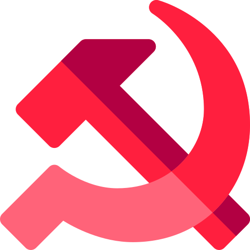

The First World War
1914-1918
Content-Table
Overall
The First World War was a global war between 1914 and 1918, with round 40 nations involved:
| Axis Powers | Entente |
|---|---|
| German Empire | France |
| Austro-Hungarian Empire | United Kingdom |
| Ottoman Empire | Russia |
| Bulgaria | Italy |
| The United States | |
| Belgium & Luxemburg | |
| Japan | |
| Serbia | |
| MANY MORE |
It is also known as „the Great War“ or „the War to end all wars“, as it’s one of the bloodiest wars in human history with 17 million people dead. New technology and military tactics came into use, what the involved countries soon realised, would change the form of war, forever.
Backstory
The 1st World War is result of years of imperialism and global dominance by europe. Thanks to the industrial revolution and the population boom, major powers like Britain, France, Germany and the USA/Japan controlled much of the world. Politcaly as well as economically, leaving only a few nations independent. Since the unification of Germany, the balance of power in Europe shifted.
Before the war
Begin
Assassination of Franz Ferdinand
June 28, 1914: To inspect the imperial armed forces, the austro-hungarian heir, Franz Ferdinand, visited the capital Sarajevo of the newly annexed provinces of Bosnia-Herzegovina. This annexation provoked serbian nationalists, who believed that Bosnia should be part of Serbia. Six assassins from a organisation known as Young Bosnia or Mlada Bosna, reinforced by the Black Hand, planned to kill the heir, in hope, that his death would free Bosnia from the Austrians. The first attempt failed, injuring only some officers. However, one hour later, Ferdinand returned to visit the injured officers and his car took a wrong turn. Unfortunately, one of the assassins, Gavrilo Princip, was there and he took the chance to achieve his goal. The heir and his wife were shot and died shortly after.
July Crisis
What followed was the July crisis, in which Austria-Hungary accused Serbia to have helped in the murder against the heir. Austria wanted to estinguish serbian nationalism, however, Serbia had a big ally: Russia. Because of this, Austria waited for support by Germany. Its emperor, Willhelm II., secretly assured their assistance in form of the ‚Blank check‘, which gave Austria Germany’s full support in any action. Austria sent an ultimatum, which included extremely harsh even unfair terms. Knowing that Austria will declare war, Serbia began to mobilize its arms and on July 28th 1914, Austria-Hungary declared war on Serbia. One thing leads to another and peace in europe has ended.
The Great War
Schlieffen-Plan
Germany had a plan named „Schlieffen-Plan“, named by its creator Field Marshal Alfred von Schlieffen. They knew that Russia was big, too big to mobilize in time to help their allies. So Germany planned to quickly defeat France through Belgium,move their forces to the east and win the war.
The Western Front
On August 4, 1914, German troops entered Belgium, forcing the UK to join the war on allied side. At first, the Germans made quick progress, but Belgium slowed them down with fierce resistance. In the assault for the heavily defended city of Liege, the Germans most powerful weapons came to play: enormous siege cannons. The city was captured in August, 15. The brutal german war machine left death and destruction as they advanced through belgium, shooting multiple civilians. They marched far into northeastern France until they were stopped by the allied forces. In the Battle of Marne, September 5 to 12, british and french soldiers managed to defeat the Germans. With a counterattack they drove them back to the Aisne River. This ruined the plan for the German Empire for a quick victory. Now, both sides dug into trenches, creating a war of attrition, which should last for the next 3 years. This trench war will cost many lives on both sides. War crimes were commited on both sides, too, but more on the german side.
6 to 13 million civilians died
during the war
- Chemical Weapons
- Sinking civilian ships
- Massacre of civilians
- Deportation of civilians
- Torture of civilians
- Rape
- ...
German War Crimes
Eastern Front
Russia mobilized much faster than the Triple Alliance had expected. On August 14, they entered eastern Prussia, what forced Germany to send troops to the eastern front. They managed to stop the Russians at the Battle of Tannenberg (August 26-30, 1914). Despite the victory, this loss of force in the wester front contributed to the defeat in Marne.
More Fronts in the South
Serbia managed to repel multiple offenses by the axis powers, but because of Bulgaria's entry on the central side on October 11, 1915, they were defeated and occupied. Greece was neutral and its King Constantine wanted to keep it that way, but the Prime Minister favoured the allies. Greece split, but long story short, Greece united and joined the Entente.
 The Russian Revolution
Since 1914, the war raged on Russias border. Despite multiple offensives, russian forces couldn’t break through german lines. Combining the defeat on the battlefield, politcal instability, the missing food and other important needs increased tensions across the population, especially the lower classes like workers and peasants. This inner conflict ended with the Russian Revolution in 1917, in which the Bolsheviks, under the leadership of Vladimir Lenin, took power. They pulled Russia out of the war, freeing the remaining german troops in the east.
Another big player
The United States became one of wealthiest and strongest nations during the last century, even topping the european powers. At the beginning of the war, the USA stayed neutral, and Germany wanted to keep it like that. Luckily for Germany, many ethnic germans lived in the US and support was high. However, due to allied propaganda and Germany commiting war crimes and sinking american ships, support rapidly stagnated. With Russia out of the war, Germany saw a chance to win the war, but for that, the US needed to stay out of the war in europe. But the US already invested in allied resources and equipment, so it looked extremely likely that they will join and help the allies.
Zimmermann Telegram
To distract the US, Germany sent a telegram to Mexico, offering them to regain lost land for declaring war against America. Sadly for the Axis, british arms managed to intercept the message and after they showed it to the US, they joined the war on April 4, 1917, on allied side.
Last Months
The central powers knew with American entry into the war they had no chance to win, so they decided to risk everything and attack with the full power they still had. These attacks, also known as the German spring offensive (March 21, 1918- 18 July 1918), was the last attempt to win the war before the american troops arrived. Despite some success, the Germans suffered heavy casualties and in July 18, 1918, the Entente regained the upper hand and began their counterattack against the collapsing German Empire. The central powers lost on all fronts. Bulgaria collapsed first, followed by the Ottoman Empire, then Austria-Hungary and finally on November 11, 1918, Germany surrendered. The Great War was over.

Treaty of Versailles
Treaty of Saint-German
Treaty of Lausanne
We don't take any responsibility for any misunderstanding.
But we proudly encourage you to inform yourself about historical events
and their accuracy.
©HistoryOrSomething